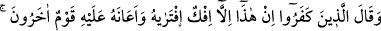
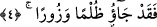
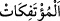
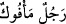
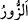
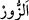
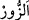
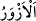
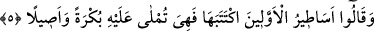
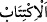

4. İnkâr edenler: “Bu (Kur’an), olsa olsa onun (Muhammed’in) uydurduğu bir
yalandır. Başka bir zümre de bu hususta kendisine yardım etmiştir.” dediler.
Böylece onlar hiç şüphesiz haksızlığa ve iftirâya başvurmuşlardır.
Nadr b. Hâris ve Abdullah b. Ümeyye, Nevfel b. Huveylid ve onlara uyan kimseler
gibi “İnkâr edenler: Bu” yâni Kur’an “olsa olsa onun” Muhammed’in kendiliğinden
“uydurduğu” ters yüz edip söylediği “bir yalandır.” Çünkü “__WORD__ bulunmayı hak ettiği
halden ters yüz edilmiş/çevrilmiş her şeye denir. Bu sebeple ters yönden esen
rüzgarlara “__WORD__ denilmiştir. Hak’tan bâtıla dönen kimseye de “__WORD__ denir.
İftira ile yalan arasındaki fark şudur: İftira kişinin bizzat kendisinin yalan
uydurmasıdır. Yalan ise bazen böyle bir konuda başkalarını taklid etmekten kaynaklanır.
Nitekim el-Es’iletü’l-müfhıme’de böyle geçmektedir.
“Başka bir zümre” yâni yahudiler “de bu hususta” onu uydurma konusunda
“kendisine yardım etmiştir.” dediler.” Çünkü onlar yahudilerin geçmiş ümmetlerin
haberlerini Hz. Peygamber (s.a.)’e aktardığını, O’nun da bunları kendi ifâdeleriyle dile
getirdiğini iddiâ ediyorlardı.
“Böylece onlar hiç şüphesiz haksızlığa ve iftirâya başvurmuşlardır.” Çünkü onlar
insanları âciz bırakan mu‘ciz bir kelâmı yahudiler tarafından uydurulmuş biz söz olarak
nitelemekle büyük bir zulüm/haksızlık yaptılar. Yâni yalanı hak ettiği yerden başkasına
isnad ettikleri için zulmetmiş oldular
“__WORD__ büyük yalan demektir. Çünkü Hz. Peygamber (s.a.)’e kendisinin uzak ve berî
bulunduğu bir şeyi nisbet ettiler.
İmam Râğıb der ki: “Asıl yönünden sapma olduğu için yalana “__WORD__ denilmiştir.
Çünkü “__WORD__ göğüs kemiğinde görülen meyil, eğikliktir. “__WORD__ göğsü eğik olan
demektir.”
5. Yine onlar dediler ki: “(Bu âyetler), onun, başkasına yazdırıp da kendisine
sabah-akşam okunmakta olan, öncekilere âid masallardır.”
“Yine onlar” Kur’ân hakkında “dediler ki:” Bu âyetler “O’nun, başkasına yazdırıp
da” yâni kendisi için yazılmasını emredip de, demektir. Çünkü Hz. Peygamber (a.s.)’ın
yazması yoktu. el-Müfredât’ta: “__WORD__ bir şeyi uydurma mânâsında kullanılır.”
demiştir.